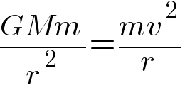
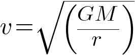

Symulacja ma na celu pokazanie zachowania układu gwiazda-planeta w zależności od mas rozważanych obiektów oraz zaprezentowanie przelotu komety w pobliżu opisanego układu.
2. Instrukcja
Po wystartowaniu symulacji planeta rozpoczyna ruch po orbicie. Jej prędkość wyjściowa jest obliczona dla uzyskania orbity kołowej,
a zatem przez zrównanie siły grawitacji z siłą dośrodkową:

Otrzymując:

Panel znajdujący się obok okna symulacji pozwala na regulację następujących parametrów:
masa gwiazdy
masa planety
wysokość "y" z jakiej startuje kometa
masa komety
początkowa prędkość liniowa komety jako ułamek prędkości początkowej planety
kąt odchylenia od poziomu w stopniach [-90,90]
3. Uwagi i założenia
Przedstawione ciała nie reprezentują układu Słońce-Ziemia, a jedynie teoretyczny układ, w którym masa gwiazdy jest 3 rzędy wielkości
większa od masy planety
W układzie nie są przewidziane zderzenia, w obliczeniach wszystkie ciała traktowane są jako punkty materialne
o opisanej masie
Gwiazda nie podlega wpływowi grawitacji pozostałych ciał, który przy kilku rzędach wielkości różnicy w masie jest pomijalny
4. Krótki opis projektu
W projekcie wykorzystano technologie:
HTML5: elementy semantyczne m.in. "footer", "article", "audio", "video"
Grafika: element "canvas"
JavaScript: animacje, modyfikacja strony przy użyciu m.in "getElementById", "innerHTML", "onClick()" oraz modyfikacja stylu m.in. atrybutu "hidden"
Dodatkowe funkcjonalności: WebWorker - technologia pracy w tle pokazana na prostym przykładzie zegara niezależnego od animacji